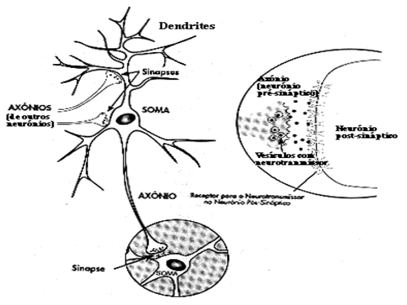
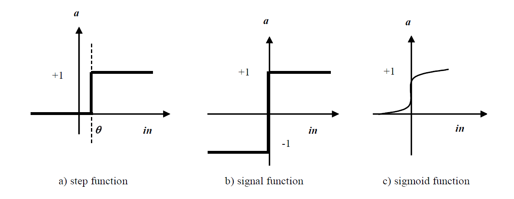

Neural Networks
Artificial Intelligence Applied to Games
The Brain
The brain
- Neurons are the fundamental unit of the nervous system tissue.
- A biological neuron has three types of components that are specially interesting for the understanding of artificial neurons:
- Dendrites
- Soma (cell body)
- Axon

Neuron Structure
Each neuron is composed of a cellular body with several branches called dendrites and an isolated longer branch, called axon.
- Dendrites connect to other neurons’ axons through junctions called synapses
- A neuron can be connected to hundreds of thousands of other neurons
Neuron Signal Propagation
Signals propagate between neurons through a complicated electrochemical reaction which leads synapses to produce chemical substances that enter through dendrites. This can raise or diminish the electrical potential of the cellular body.
If the electrical potential overpasses some limit, an electrical impulse is sent to the axon, which spreads by its ramifications, thus transmitting electrical signals to other neurons.
The brain
An average brain has something on the order of 100 billion neurons. Each neuron is connected to up to 10,000 other neurons, which means that the number of synapses is between 100 trillion and 1,000 trillion.
It has been observed that:
- Often used connections become stronger
- Neurons sometimes form new connections with other neurons
- These mechanisms are thought to lead to learning
- Computation is strongly parallel and asynchronous
Artificial Neural Networks
What is an Artificial Neural Network?
- It is an information processing system with some characteristics in common with biological neural networks.
- It consists of an interconnected set of simple processing units called neurons whose functionality is vaguely similar to that of a biological neuron.
- Neurons communicate between them by sending signals through a large number of connections and information processing occurs as if it occurred simultaneously in several neurons.
Artificial Neural Network Structure
- Each neuron has:
- A set of input connections
- A set of output connections
- Some neurons are connected to the “outside world” (some for inputs, others for output).
- Each connection has a weight associated to it. Weights are the main means of information storage of a network.
Network Example
Network Example
Key components:
- Input layer: Receives external inputs
- Hidden layers: Internal processing layers
- Output layer: Produces the network output
- Weights: Values on connections between neurons
Using Neural Networks
In order to use a neural network, we have to decide:
- How many neurons to use and of what type are they
- How will they be connected
Then:
- Initialize the weights
- Start the training phase, during which the weights are modified until the network works as desired (in some networks other things may be changed besides the weights)
Simplified Model of a Neuron
Computation Process
The computation in each neuron is simple: it receives signals from the input connections and computes a new activation value which is sent through its output connections.
- The computation of this value is done in two phases:
- First, a weighted sum of the inputs is computed
- Then, the neuron’s activation value \(a\) is computed using a so-called activation function which uses as input the value computed in the first phase
Mathematical Model
\[\text{in} = \sum w_i x_i - \theta\]
\[a = g(\text{in})\]
Where:
- \(x_i\) are the inputs
- \(w_i\) are the weights
- \(\theta\) is the bias (or offset)
- \(g\) is the activation function
- \(a\) is the output activation
Mathematical Model
The Bias Term
As we can see in the previous figure, there is a special input with value -1, with a weight called offset or bias represented as \(\theta\).
The role of \(\theta\)’s value will be illustrated in the next slides.
Common Activation Functions
- Unit Step function: Binary output (0 or 1)
- Sign function: Binary output (-1 or +1)
- Sigmoid function: Continuous output between 0 and 1
Neuron Example
Let us consider a neuron with two inputs and with the unit step activation function. So:
\[a = \begin{cases} 1, & \text{if } x_1 w_1 + x_2 w_2 - \theta > 0 \\ 0, & \text{if } x_1 w_1 + x_2 w_2 - \theta < 0 \end{cases}\]
This means that the neuron’s activation value (output) will be 1 if the weighted sum of the inputs is larger than \(\theta\) and 0, otherwise.
Therefore, \(\theta\) represents the minimum value that the weighted sum must have so that the neuron’s activation value can be 1.
\(\theta\) can be used with activation functions other than the step function.
Limitations of a Single Neuron
One neuron divides in two parts the inputs space with the straight line \(x_1 w_1 + x_2 w_2 - \theta = 0\)
Vector Notation
It is common to use vectors notation to represent the sets of inputs and weights.
Using this notation, we can say:
\[a = \begin{cases} 1, & \text{if } \mathbf{X}^T \mathbf{W} > \theta \\ 0, & \text{if } \mathbf{X}^T \mathbf{W} \leq \theta \end{cases}\]
where \(\mathbf{X}\) represents the inputs vector and \(\mathbf{W}\) the weights vector.
Hyperplanes
- In two dimensions (two inputs) the division is done by a straight line
- In three dimensions, by a plane
In larger dimensional spaces, we say that the division is done by a hyperplane
This implies that a single neuron is only able to represent linearly separable functions, which constitutes a serious limitation on the number of functions that can be represented.
Example: Logic Functions
For example, it is very easy to build a network with just one element that behaves as a logic AND or a logic OR, but it is impossible to represent a function as simple as the logic XOR:
Neural Networks Topologies
Neural Networks Topologies
There are different types of network topologies, each one with its own characteristics. The main distinction is between:
Feed-forward Networks
Where the connections are unidirectional and there are no feedback loops.
Recurrent Networks
Where there are feedback loops (for example, the output networks can be connected to the input ones). These networks can form arbitrary topologies.
Feed-forward Networks
Feed-forward Networks
In this type of networks, it is common to organize the neurons in layers.
In a layered feed-forward network:
- There are no connections between neurons of the same layer
- There are no connections with neurons of preceding layers
- It is fairly simple to make the computations because there are no loops
- These networks can implement simple reactive agents
Feed-forward Networks
Network with two layers:
- The first layer is composed by units \(n_1\) and \(n_2\), which receive signals from the environment
- On the right side, we have the output units (only one, in this case)
- All layers, except the output layer, are called hidden units
Feed-forward Networks
Some networks don’t have hidden layers. This simplifies the learning problem, but it implies, as already seen, strong limitations on what can be represented by the network.
Important results:
- With a sufficiently large hidden layer, it is possible to represent any continuous function
- With two hidden layers, discontinuous functions can be represented
Hopfield Networks
Hopfield Networks
Hopfield networks are an example of recurrent networks that have been extensively studied.
Characteristics:
- All the network’s units are both input and output neurons
- The connections are bidirectional
- The sign function is used as activation function
Hopfield Networks
This type of network works as an associative memory.
- It is able to memorize 0.138n examples, where \(n\) is the number of neurons
- For example, if the training set consists of a set of photos and if a small part of one of these photos is later presented to the network, the activation levels of the network should reproduce the photo to which the fragment presented belongs
Network Structure Selection
One of the problems posed to who wants to build a neural network is the choice of its structure.
Trade-offs
» If the network is too small may not be able to represent/model the desired function
» If it is too big, it can be able to represent exactly the training examples but be unable to generalize beyond those examples (we call overfitting to this problem)
- The truth is that there is no method for choosing what is exactly the best structure for a neural network.
Neural Networks Training
Configuration Methods
A neural network must be configured so that a set of inputs produce the desired output.
There are basically two methods to set the network connections’ weights:
- Using a priori knowledge (rarely used)
- Training the network using some learning method
Types of Learning
Supervised learning
Unsupervised learning
Reinforcement learning
These learning paradigms involve the actualization of weights of the connections between neurons, according to some learning rule.
Learning Rules
Virtually all learning rules can be considered as variants of the Hebb’s rule suggested by Hebb in Organization of Behaviour (1949).
“Neurons that fire together, wire together” - Donald Hebb
Hebb’s Rule
Idea: If two units \(i\) and \(j\) are simultaneously active, then the connection between them should be strengthened.
If unit \(i\) receives a value from unit \(j\), then Hebb’s rule prescribes the modification of \(w_{ij}\) according to:
\[\Delta w_{ij} = \gamma a_i a_j\] Where:
- \(\gamma\) is a positive proportionality constant that represents the learning rate
- \(a_i\) and \(a_j\) represent the output values of units \(i\) and \(j\), respectively

Hebb’s Rule Examples
Both Neurons Active:
γ = 0.1 (learning rate)
aᵢ = 1 (neuron i is active)
aⱼ = 1 (neuron j is active)
Then: Δwᵢⱼ = 0.1 × 1 × 1 = 0.1
So the weight wᵢⱼ increases by 0.1.
One Neuron Inactive:
γ = 0.1 (learning rate)
aᵢ = 1 (neuron i is active)
aⱼ = 0 (neuron j is NOT active)
Then: Δwᵢⱼ = 0.1 × 1 × 0 = 0.0
So the weight wᵢⱼ increases by 0.0.
Delta Rule (Widrow-Hoff 1960)
Delta rule is a variant of the Hebb’s rule: instead of the activation of unit \(i\), it introduces the difference between the current activation value of unit \(i\), \(a_i\), and the desired activation value, \(d_i\), to update the weights:
\[\Delta w_{ij} = \gamma (d_i - a_i) a_j\]
- The Delta Rule is a supervised learning algorithm
- It adjusts weights proportionally to:
- How wrong we are (dᵢ - aᵢ)
- How much the input contributed (aⱼ)
If the input neuron (aⱼ) was active and contributed to an error, we adjust its weight more strongly.
Delta Rule Examples
Example: Want Neuron i to activate
γ = 0.1 (learning rate)
dᵢ = 1 (we want neuron i to output 1)
aᵢ = 0 (but it actually outputs 0)
aⱼ = 1 (input neuron is active)
Calculation:
Error = dᵢ - aᵢ = 1 - 0 = 1
Δwᵢⱼ = γ × error × aⱼ
= 0.1 × 1 × 1
= 0.1
Result: The weight increases by 0.1, making neuron i more likely to activate next time when neuron j is active.
Example: Want Neuron i to NOT activate
γ = 0.1
dᵢ = 0 (we want neuron i to output 0)
aᵢ = 1 (but it actually outputs 1 - wrong!)
aⱼ = 1 (input neuron is active)
Calculation:
Error = dᵢ - aᵢ = 0 - 1 = -1
Δwᵢⱼ = γ × error × aⱼ
= 0.1 × -1 × 1
= -0.1
Result: The weight decreases by 0.1, making neuron i less likely to activate next time.
Hebbs Rule vs Delta Rule
| Feature | Hebb’s Rule | Delta Rule |
|---|---|---|
| Type | Unsupervised | Supervised |
| Uses targets? | No | Yes (needs dᵢ) |
| Formula | γ·aᵢ·aⱼ | γ·(dᵢ - aᵢ)·aⱼ |
| Learns | Correlations | Error correction |
- The Delta Rule is also called the Widrow-Hoff rule and is the basis for backpropagation in modern neural networks!
Perceptron
Definition
We will now study how the training is done in one layer networks using, as example, a perceptron network.
A perceptron network is a feedforward network:
Each neuron (perceptron), as seen before, computes the inputs’ weighted sum and outputs a value of 1 if the sum is larger than \(\theta\) and -1, otherwise (the signal activation function is, therefore, used)
The goal of a perceptron is the learning of some transformation \(T\), using examples, each composed by the entry \(\mathbf{x}\) and by the corresponding desired output \(t = T(\mathbf{x})\)
\[T: \{-1, 1\}^n \to \{-1, 1\}^m\]
Scheme of a Perceptron Network

Note that the units are independent from each other.
This means that we can limit our study to just one perceptron.
Perceptron Training Algorithm
Algorithm
Initialize the weights randomly
Do
For each training example \(\mathbf{x}\) from the train set do
Compute the output \(a\) of the network for input \(\mathbf{x}\)
If \(a \neq T(\mathbf{x})\) (the perceptron answers incorrectly), modify the connections weights (including \(\theta\)) as follows:
\[\Delta w_i = \gamma (t - a) x_i\]
where \(\gamma\) represents the learning rate and should be \(0 < \gamma \leq 1\)
Until \(a = T(\mathbf{x})\) for all training examples
Relationship to Hebb’s Rule
This procedure is very similar to the Hebb’s rule. The only difference is that, if the network answer is correct, there is no weights update.

Perceptron Training Example
Problem Setup
We want the perceptron to learn the logic AND function using a learning rate with value 1.
Consider that the perceptron is initialized in the following way:

The training examples consist of vectors \([x_1, x_2]\) with values \([-1, -1]\), \([-1, 1]\), \([1, -1]\) and \([1, 1]\) (corresponding to the combinations that the AND function inputs can have) associated to the corresponding desired output: \(-1, -1, -1, 1\), respectively.
1st Presentation of Training Set
Vector [-1, -1]:
\[a = \text{signal}(w_1 \cdot x_1 + w_2 \cdot x_2 + 0 \cdot (-1)) = \text{signal}(0 + 0 + 0) = \text{signal}(0) = -1\]
which corresponds to the output of \(-1\) AND \(-1\). Therefore, nothing is done.
Vector [-1, 1]:
\[a = \text{signal}(0 \cdot (-1) + 0 \cdot 1 + 0 \cdot (-1)) = \text{signal}(0) = -1\]
which corresponds to the output of \(-1\) AND \(1\). Therefore, nothing is done.
1st Presentation (continued)
Vector [1, -1]:
\[a = \text{signal}(0 \cdot 1 + 0 \cdot (-1) + 0 \cdot (-1)) = \text{signal}(0) = -1\]
which corresponds to the output of \(1\) AND \(-1\). Therefore, nothing is done.
Vector [1, 1]:
\[a = \text{signal}(0 \cdot 1 + 0 \cdot 1 + 0 \cdot (-1)) = \text{signal}(0) = -1\]
which doesn’t correspond to the output of \(1\) AND \(1\). Let, therefore, update the weights:
- \(w_1(\text{new}) = w_1(\text{current}) + \gamma \cdot (t - a) \cdot x = 0 + 1 \cdot 2 \cdot 1 = 2\)
- \(w_2(\text{new}) = w_2(\text{current}) + \gamma \cdot (t - a) \cdot x = 0 + 1 \cdot 2 \cdot 1 = 2\)
- \(\theta(\text{new}) = \theta(\text{current}) + \gamma \cdot (t - a) \cdot x = 0 + 1 \cdot 2 \cdot (-1) = -2\)
2nd Presentation of Training Set
Current weights: \([2, 2, -2]\)
Vector [-1, -1]:
\[a = \text{signal}(2 \cdot (-1) + 2 \cdot (-1) + (-2) \cdot (-1)) = \text{signal}(-2) = -1\]
which corresponds to the output of \(-1\) AND \(-1\). Therefore, nothing is done.
Vector [-1, 1]:
\[a = \text{signal}(2 \cdot (-1) + 2 \cdot 1 + (-2) \cdot (-1)) = \text{signal}(2) = 1\]
which doesn’t correspond to the output of \(-1\) AND \(1\). Let us, therefore update the weights:
- \(w_1(\text{new}) = w_1(\text{current}) + \gamma \cdot (t - a) \cdot x = 2 + 1 \cdot (-2) \cdot (-1) = 4\)
- \(w_2(\text{new}) = w_2(\text{current}) + \gamma \cdot (t - a) \cdot x = 2 + 1 \cdot (-2) \cdot 1 = 0\)
- \(\theta(\text{new}) = \theta(\text{current}) + \gamma \cdot (t - a) \cdot x = -2 + 1 \cdot (-2) \cdot (-1) = 0\)
2nd Presentation (continued)
Current weights: \([4, 0, 0]\)
Vector [1, -1]:
\[a = \text{signal}(4 \cdot 1 + 0 \cdot (-1) + 0 \cdot (-1)) = \text{signal}(4) = 1\]
which doesn’t correspond to the output of \(1\) AND \(-1\). Let us update the weights:
- \(w_1(\text{new}) = w_1(\text{current}) + \gamma \cdot (t - a) \cdot x = 4 + 1 \cdot (-2) \cdot 1 = 2\)
- \(w_2(\text{new}) = w_2(\text{current}) + \gamma \cdot (t - a) \cdot x = 0 + 1 \cdot (-2) \cdot (-1) = 2\)
- \(\theta(\text{new}) = \theta(\text{current}) + \gamma \cdot (t - a) \cdot x = 0 + 1 \cdot (-2) \cdot (-1) = 2\)
Current weights: \([2, 2, 2]\)
Vector [1, 1]:
\[a = \text{signal}(2 \cdot 1 + 2 \cdot 1 + 2 \cdot (-1)) = \text{signal}(2) = 1\]
which corresponds to the output of \(1\) AND \(1\). Therefore, nothing is done.
3rd Presentation of Training Set
Current weights: \([2, 2, 2]\)
Vector [-1, -1]:
\[a = \text{signal}(2 \cdot (-1) + 2 \cdot (-1) + 2 \cdot (-1)) = \text{signal}(-6) = -1\]
which corresponds to the output of \(-1\) AND \(-1\). Therefore, nothing is done.
Vector [-1, 1]:
\[a = \text{signal}(2 \cdot (-1) + 2 \cdot 1 + 2 \cdot (-1)) = \text{signal}(-2) = -1\]
which corresponds to the output of \(-1\) AND \(1\). Therefore, nothing is done.
3rd Presentation (continued)
Vector [1, -1]:
\[a = \text{signal}(2 \cdot 1 + 2 \cdot (-1) + 2 \cdot (-1)) = \text{signal}(-2) = -1\]
which corresponds to the output of \(1\) AND \(-1\). Therefore, nothing is done.
Vector [1, 1]:
\[a = \text{signal}(2 \cdot 1 + 2 \cdot 1 + 2 \cdot (-1)) = \text{signal}(2) = 1\]
which corresponds to the output of \(1\) AND \(1\). Therefore, nothing is done.
Final Result
Learning Complete
The learning process is finished. The set of weights that allows the perceptron to answer correctly is:
\(w_1 = 2\) \(w_2 = 2\) \(\theta = 2\)
The Delta Rule or LMS
Overview
The Delta rule, also known as LMS (Least Mean Square) is a generalization of the perceptron’s training algorithm, extended to be able to deal with continuous inputs and outputs.
According to this rule, the weights update is done in the following way:
\[\Delta w_{jp} = \gamma \delta_p x_{jp}\]
where \(\delta_p = d_p - a_p\) is the difference between the desired and the current output for the input pattern \(p\).
LMS with Linear Units
The LMS procedure has been applied more often with purely linear output units.
For a network of this type (linear output) with just one output unit, the output is given by:
\[a = \sum_j w_j x_j - \theta\]
The error function, as the name indicates, is the quadratic sum of the weights, that is, the total error, \(E\), is defined by:
\[E = \sum_p E_p = \sum_p \frac{1}{2}(d_p - a_p)^2\]
Gradient Descent Method
The LMS procedure finds the weights values which minimize the function error, through a method called gradient descent.
The idea consists in doing changes to the weights proportional to the negative derivative of the error:
\[\Delta w_j = -\gamma \frac{\partial E}{\partial w_j}\]
\[\frac{\partial E}{\partial w_j} = \sum_p \frac{\partial E_p}{\partial w_j} = \sum_p \frac{\partial E_p}{\partial a_p} \frac{\partial a_p}{\partial w_j}\]
Derivation
Given that the units are linear, we have:
\[\frac{\partial a_p}{\partial w_j} = x_j\]
and
\[\frac{\partial E_p}{\partial a_p} = -(d_p - a_p)\]
Which leads to:
\[\Delta w_{jp} = \gamma \delta_p x_j\]
where \(\delta_p = d_p - a_p\) is the difference between the desired output and the current output for the training example \(p\).
Back-propagation
Historical Context
Minsky and Papert showed in 1969 that a feed-forward network with two layers could solve many of the restrictions found until then, but presented no solution for the problem of adjusting the weights of the hidden layers.
The Solution
In 1986 Rumelhart, Hinton and Williams presented a solution for this problem.
The central idea of this solution is that the errors for the hidden layers units are computed backpropagating the errors of the output layer units.
The algorithm can also be considered a generalization of the Delta rule for non-linear activation functions and can be applied to networks with any number of layers.
Back-propagation Algorithm
- Initialize all the weights with low random values
- While stop condition not satisfied do
- For each training example do
- Compute the output \(o\) of the network for the training example
- For each output unit \(k\) do // computes and propagates errors through the network \[\delta_k = f'(in_k)(d_k - a_k)\]
- For each hidden unit \(h\) do \[\delta_h = f'(in_h) \sum_k w_{h,k} \delta_k\]
- Update each weight of the network: \[w_{i,j} = w_{i,j} + \gamma \delta_j a_i\]
- For each training example do
Sigmoid Activation Function
Let us consider the sigmoid activation function:
\[f(x) = \frac{1}{1 + e^{-x}}\]
whose derivative is:
\[f'(x) = \frac{1}{1 + e^{-x}} \cdot (1- \frac{1}{1 + e^{-x}})\]
that is:
\[f'(x) = f(x) \cdot (1 - f(x))\]
Error Computation for Output Units
So, the error for an output unit \(k\) is given by:
\[\delta_k = f'(in_k) \cdot (d_k - a_k)\]
\[\delta_k = f(in_k) \cdot (1 - f(in_k)) \cdot (d_k - a_k)\]
\[\delta_k = a_k \cdot (1 - a_k) \cdot (d_k - a_k)\]
That is, for the output units, the error is:
\[\boxed{\delta_k = a_k \cdot (1 - a_k) \cdot (d_k - a_k)}\]
Components:
- Desired output: \(d_k\)
- Current output: \(a_k\)
Error Computation for Hidden Units
For the hidden layers units \(h\), the error is given by:
\[\boxed{\delta_h = a_h \cdot (1 - a_h) \cdot \sum_k w_{h,k} \delta_k}\]
Components:
- Current output of unit \(h\): \(a_h\)
- Weight of the connection to destination unit \(k\): \(w_{h,k}\)
- Error for the destination unit \(k\): \(\delta_k\)
- Forward connections: \(\sum_k\)
Weight Update
And the new weights:
\[\boxed{w_{i,j} = w_{i,j} + \gamma \delta_j a_i}\]
Components:
- Current value: \(w_{i,j}\)
- Error for the destination unit: \(\delta_j\)
- Output value for the origin unit: \(a_i\)
Back-propagation Exercise
Exercise
Given the below network and the following training example\[\langle [0, 1], [1, 1] \rangle(\langle Input, Desired Output\rangle)\]

Network structure: - Inputs: \([0, 1]\) - Hidden units: \(h_1\), \(h_2\) - Output units: \(o_1\), \(o_2\) - Weights: shown in diagram - Activation function: sigmoid - Learning rate: \(\gamma = 0.25\)
Solution: Forward Pass
First, we need to compute the network output for input \([0, 1]\):
Output of \(h_1\):
\[f(0 \cdot (-0.1) + 1 \cdot 0.3) = f(0.3) = \frac{1}{1+e^{-0.3}} = 0.5744\]
Output of \(h_2\):
\[f(0 \cdot 0.2 + 1 \cdot (-0.2)) = f(-0.2) = \frac{1}{1+e^{0.2}} = 0.4502\]
Output of \(o_1\):
\[f(0.5744 \cdot 0.2 + 0.4502 \cdot (-0.5)) = f(-0.1102) = \frac{1}{1+e^{0.1102}} = 0.4725\]
Output of \(o_2\):
\[f(0.5744 \cdot 0.2 + 0.4502 \cdot (-0.1)) = f(-0.0698) = \frac{1}{1+e^{-0.0698}} = 0.5175\]
Solution: Delta Errors
Delta errors:
\[\delta_{o_1} = (1 - 0.4725) \cdot 0.4725 \cdot (1 - 0.4725) = 0.1315\]
\[\delta_{o_2} = (1 - 0.5175) \cdot 0.5175 \cdot (1 - 0.5175) = 0.1205\]
\[\delta_{h_1} = 0.5744 \cdot (1 - 0.5744) \cdot (0.2 \cdot 0.1315 + 0.2 \cdot 0.1205) = 0.0123\]
\[\delta_{h_2} = 0.4502 \cdot (1 - 0.4502) \cdot (-0.5 \cdot 0.1315 + (-0.1) \cdot 0.1205) = -0.0193\]
Solution: Weight Updates
Using \(\gamma = 0.25\):
\[w_{h_1x_1} = -0.1 + 0.25 \cdot 0.0123 \cdot 0 = -0.1\]
\[w_{h_1x_2} = 0.3 + 0.25 \cdot 0.0123 \cdot 1 = 0.3031\]
\[w_{h_2x_1} = 0.2 + 0.25 \cdot (-0.01) \cdot 0 = 0.2\]
\[w_{h_2x_2} = -0.2 + 0.25 \cdot (-0.0193) \cdot 1 = -0.2048\]
\[w_{o_1h_1} = 0.2 + 0.25 \cdot 0.1315 \cdot 0.5744 = 0.2189\]
\[w_{o_1h_2} = -0.5 + 0.25 \cdot 0.1315 \cdot 0.4502 = -0.4852\]
\[w_{o_2h_1} = 0.2 + 0.25 \cdot 0.1205 \cdot 0.5744 = 0.2173\]
\[w_{o_2h_2} = -0.1 + 0.25 \cdot 0.1205 \cdot 0.4502 = -0.0864\]
Back-propagation Problems
Long Training Periods
Long training periods can be due to an inadequate learning rate:
Learning Rate Issues
- If we use a learning rate too small, the algorithm may take too long to converge
- If we use a learning rate too high, the weights can oscillate, making it difficult for convergence to good solutions (weights close to the minimum error value)
Unit Saturation
As the training process advances, the weights can reach very high values.
This can lead to:
Very high weighted inputs sums
Due to the usage of the sigmoid activation function, the units will have activation values \(a\) very close to zero
In these circumstances, the variation of weights, which is proportional to \(a \cdot (1 - a)\), will be close to zero and the network won’t learn
Solution
A good way of avoiding this problem is to normalize the entries in the [0, 1] interval.
Local Minima
The error surface of a complex network has plenty of hills and valleys, and the network can be stuck in a local minimum, even if there is a nearby global minimum.

Improving BackPropagation Convergence
Techniques
Important Note
These techniques do not grant a faster convergence and/or to a global minimum (especially the first two). However, they often lead to better results.
- Change the presentation order of the training examples
- Start with a high learning rate and diminish it gradually as the training process progresses
- Momentum (see next section)
- Others…
Momentum
Goal: To accelerate the learning process amortizing oscillations and facilitating the convergence to a global minimum of the error function.
How: The variation of weights depends also on previous variations:
\[w_{i,j}(t) = \gamma \delta_j a_i + \alpha \Delta w_{i,j}(t-1)\]
- Where: \(\gamma\) is the learning rate \(\alpha\) is the momentum coefficient \(\Delta w_{i,j}(t-1)\) is the previous weight change
Momentum Effects
Without momentum  It cant escape from the local minimum, due to oscilations
It cant escape from the local minimum, due to oscilations
With momentum  It can escape from the local minimum: the weights tend to be modified in the direction of previous modifications
It can escape from the local minimum: the weights tend to be modified in the direction of previous modifications
Sucessive updates in the same direction tend to increase the magnitude, of the modifications, leading to a faster convergence.
Back-propagation Applications
General Applications
In general: learning of some function by the way of training examples. The network should be able to generalize.
Example: Controlling the arm of a Robot
Historical Example: NETTALK (1987) was a system able to convert written English to intelligible speech.
Note
Search for “sejnowski nettalk” on YouTube to see it in action.
Other Applications: - Signals classification (e.g., sonar) - Pattern recognition - Function approximation
Training Neural Networks
The Training Set
Usually, it is not possible to train a neural network with all the examples of the universe of interest because: It is often too large or infinite (e.g., the inputs/outputs are real numbers) We just have access to a subset of the universe
- In order to train the network, a subset of all the universe of possibilities is used. This subset, called the training set, is hoped to be representative of the function that the neural network is supposed to learn.
The Test Set
After the training process, the neural network is tested with the so-called test set (with no common examples with the training set).
This is done in order to verify if the network is able to generalize beyond the examples used in the training process.
Evaluation:
- If the neural network has a good performance with the test set, the training process is finished
- If not, the training process must be repeated after something has been changed (the training set, the learning rate, the network architecture, etc.)
Neural Networks Examples
Application Domains
- Voice/image recognition (faces detection/identification, sentiment analysis)
- Translation
- Industrial control
- Financial analysis
- Medicine
- Robotics
- Pattern classification
- Non-linear control
Final Notes
Characteristics
Neural networks are specially suitable for situations where inputs and outputs have continuous values.
Key Properties
- They are quite resistant to noise
- They work as a “black box”: they do not provide any explanation for the output.
This makes it difficult to use existing knowledge to set up the network, for example, setting the weights with a priori knowledge.
Further Reading
Topics to Explore
- Cross-validation
- Evaluation metrics:
- Confusion matrix
- Precision, recall, F-measure
- Mean absolute error
- Mean absolute percentage error
- Root mean squared error
- Relative absolute error
- Advanced architectures:
- Kohonen networks (self-organized maps)
- Deep learning
- Convolutional neural networks
- Tools and frameworks:
- Weka
- TensorFlow
- And much more…
Additional Resources
Recommended Reading
Explore the references mentioned at the beginning of this document for deeper understanding of neural networks concepts and applications.
References
Chapter 19 “Artificial Intelligence: A Modern Approach” Chapter 5 “Inteligência Artificial: Fundamentos e Aplicações” “Neural Network Design”, Martin T. Hagan
AIAG - Genetic Algorithms - Games and Multimedia